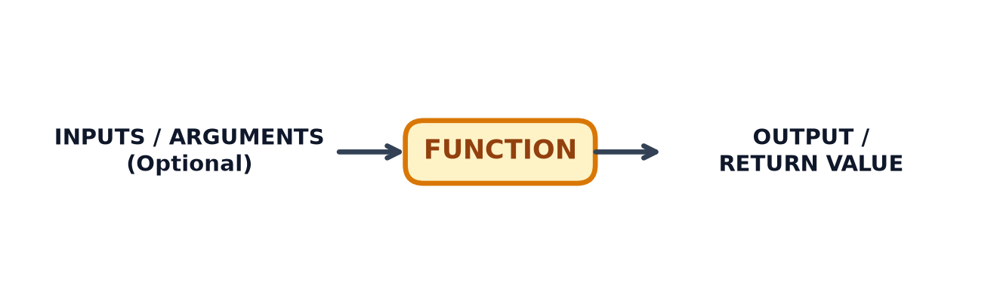

11 Python Functions
TipLearning Objectives
- Understand how data flows into and out of custom functions
- Learn the syntax for defining custom Python functions using
def - Write and run your own custom functions using standard operators and basic string, list, and maths operations
11.1 What is a Function?
A function in Python is a reusable block of code designed to perform a specific task. You can provide inputs (arguments), the function executes its code, and it returns an output (a result).
Functions allow you to organise your code logically, eliminate repetitive code, and make your programs significantly easier to read, test, and maintain.
11.2 Defining Your Own Functions
To define a custom function in Python, use the def keyword followed by the function name, parentheses (), and a colon :.
11.2.1 Function Syntax
def function_name(parameter_name):
"""Optional docstring explaining what the function does."""
# Function body (indented)
result = parameter_name + 10
return resultKey parts of a function definition:
def: The keyword used to define a function.function_name: The name you choose for your function (written in lowercase with words separated by underscores).parameters: Optional input variables passed into the function inside().return: Sends the final output value back to where the function was called.
11.2.2 Step-by-Step Examples
Example 1: Function without Inputs
Functions do not always require input parameters.
def display_welcome_message():
print("Welcome to the Python workshop!")
# Calling the function
display_welcome_message()Welcome to the Python workshop!Example 2: Function with Input Parameters
def greet_person(name):
print(f"Hello, {name}!")
greet_person("Kavi")
greet_person("Tom")Hello, Kavi!
Hello, Tom!Example 3: Function Returning a Value
def add_numbers(a, b):
return a + b
# Store the returned output in a variable
total = add_numbers(5, 10)
print(total) # Output: 1515Example 4: Function with Default Parameters
You can set default parameter values so a function can be called with fewer arguments when needed.
def greet_with_default(name="Guest"):
print(f"Hello, {name}!")
greet_with_default("Sarah") # Uses provided argument
greet_with_default() # Uses default value "Guest"Hello, Sarah!
Hello, Guest!Example 5: Custom Function for numeric processing
def calculate_average(scores):
"""Calculates the average score from a list of numbers."""
total_score = sum(scores)
number_of_scores = len(scores)
average = total_score / number_of_scores
return round(average, 2)
test_scores = [85, 90, 78, 92]
final_average = calculate_average(test_scores)
print(f"Average score: {final_average}") # Output: 86.25Average score: 86.2511.3 Exercises
11.4 Summary
TipKey Points
- Custom functions are defined using the
defkeyword followed by the function name and parameter list. - Data flows into a function via parameters (inputs are optional) and flows out via the
returnstatement. - Default parameters make custom functions flexible when called with varying numbers of arguments.
- Writing custom functions helps organise complex code into small, manageable, and reusable blocks.